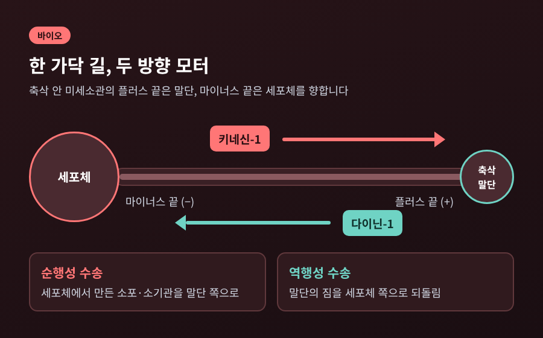
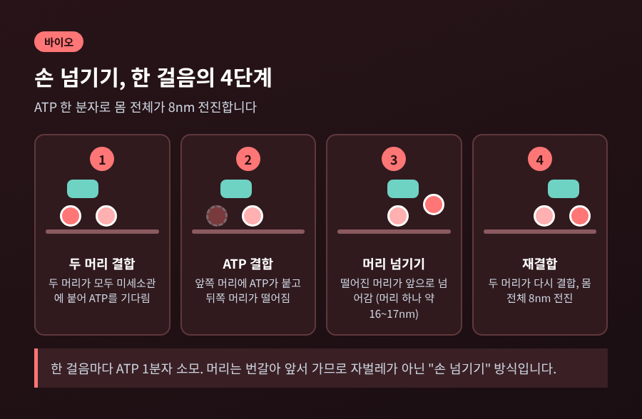
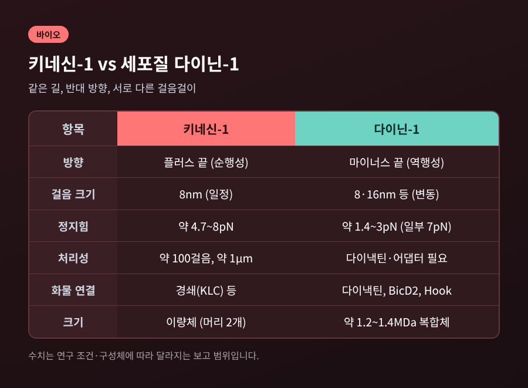
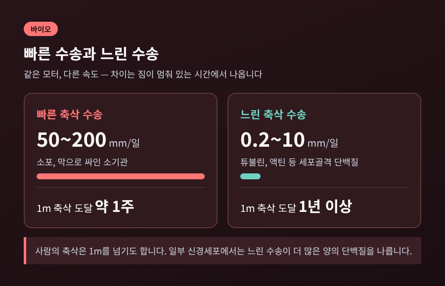
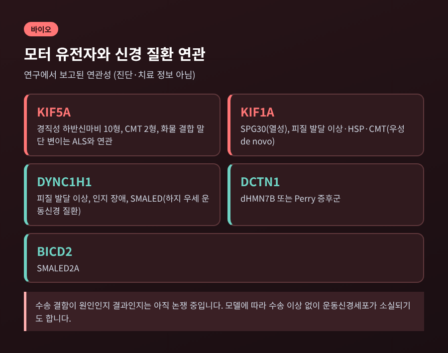

키네신 모터 단백질과 미세소관, ATP로 8nm씩 걷는 세포 물류

오늘은 세포 안에서 짐을 나르는 모터 단백질, 키네신과 다이닌에 대해 이야기해 보려 합니다.
핵심만 먼저 말씀드리면 이렇습니다. 키네신은 ATP 한 분자를 쓸 때마다 미세소관 위를 8nm씩 걸어 세포 바깥쪽으로 짐을 나릅니다. 다이닌은 반대로 안쪽을 향해 걷습니다.
이 두 모터가 어떻게 걷고, 길이 1m가 넘기도 하는 신경세포의 축삭에서 어떤 일을 하며, 고장 나면 무엇이 문제가 되는지 차례로 정리하겠습니다.

■ 모터가 걷는 길, 미세소관
세포 안은 가만히 두면 물질이 퍼져 나가는 데 한계가 있습니다. 그래서 세포는 길을 깝니다. 그 길이 미세소관입니다.
미세소관은 보통 13가닥의 프로토필라멘트가 모인 속 빈 원통입니다. 각 가닥은 αβ-튜불린 이량체가 줄지어 이어진 사슬입니다. 이 길에는 방향이 있습니다. 한쪽 끝은 플러스 끝, 반대쪽은 마이너스 끝이라 부릅니다. 플러스 끝이 더 빠르게 자랍니다.
신경세포의 축삭에서는 플러스 끝이 축삭 말단을, 마이너스 끝이 세포체를 향합니다. 길에 방향이 정해져 있으니, 모터도 방향을 가질 수 있는 셈입니다. 축삭 안에서 미세소관 사이 간격은 20~30nm 정도로 좁습니다. 이 좁은 길을 따라 미토콘드리아 같은 큰 짐도 오갑니다.
■ 키네신-1은 어떻게 걷는가
가장 많이 연구된 키네신-1은 머리가 둘 달린 이량체입니다. 두 머리가 목으로 이어져 있습니다. 걷는 방식은 사람의 걸음과 닮았습니다. 뒤에 있던 머리가 앞으로 넘어가고, 다음엔 다른 머리가 넘어갑니다. 이를 손 넘기기, 영어로 hand-over-hand라 부릅니다.
걸음 크기는 8nm입니다. 튜불린 소단위 하나의 간격과 같습니다. 그리고 한 걸음마다 ATP 한 분자가 쓰입니다. 2003년 Asbury 연구진이 광학 집게로 이를 정밀하게 재었고, 이때 정지힘은 약 6pN으로 보고되었습니다.
여기서 흥미로운 점이 하나 있습니다. 몸 전체는 8nm씩 가는데, 머리 하나만 따라가 보면 한 번에 약 17nm를 건너뜁니다. 2004년 Yildiz 연구진은 한쪽 머리에 형광 염료를 붙여 위치를 수 nm 정확도로 추적했습니다. 그 결과 머리의 17nm 걸음과 제자리 걸음이 번갈아 나타났습니다. 자벌레처럼 몸을 늘였다 줄이는 방식이 아니라, 머리가 서로를 앞질러 가는 방식임이 확인된 것입니다.

한 번 붙은 이 모터는 약 100걸음, 거리로는 약 1μm를 가고 떨어집니다. 부하가 적을 때 속도는 최대 800nm/s 안팎으로 추정됩니다. 다만 이 속도는 모델 논문의 값이라, 세포 안 실제 속도와는 다를 수 있습니다.
힘은 연구 조건에 따라 달라집니다. 정지힘은 보고마다 4.7~8pN 범위에 걸쳐 있습니다. 앞으로 가는 쪽이 압도적이지만, 정지힘을 넘는 뒤쪽 부하가 걸리면 뒷걸음이 우세해집니다. 한 모델 연구는 ATP의 약 80%가 헛도는 사이클에 쓰일 수 있다고 추정하는데, 이는 계산 결과일 뿐 실험으로 확정된 수치는 아닙니다.
■ 반대로 걷는 다이닌
예전엔 키네신 하나만으로 세포 물류를 설명하려 했습니다. 지금은 다이닌이라는 반대편 모터를 함께 말합니다. 세포질 다이닌-1은 마이너스 끝을 향해 걷습니다. 안쪽으로 짐을 돌려보내는 역할입니다.
크기부터 다릅니다. 이쪽은 약 1.2~1.4MDa(소스에 따라 다름)의 거대한 복합체이고, 중쇄 유전자는 DYNC1H1 하나입니다. 키네신 슈퍼패밀리가 포유류에서 45개 유전자로 나뉘는 것과 대조적입니다.
더 놀라운 점은 혼자서는 잘 걷지 못한다는 것입니다. 포유류 다이닌은 다이낵틴과 BicD2 같은 화물 어댑터가 붙어야 처리성 있게 움직입니다. Hook3 같은 어댑터는 다이닌을 한 개 더 불러와 속도와 힘을 높이기도 합니다. 짐의 종류를 알아보고 모터를 깨우는 장치가 어댑터인 셈입니다.
걸음도 앞서 본 모터만큼 가지런하지 않습니다. 보고된 걸음 크기가 8nm, 16nm, 심지어 24~32nm까지 다양합니다. 부하가 작으면 16nm 걸음이 많고, 1.1~2.5pN 정도의 부하에서는 8nm 걸음이 주가 된다는 측정도 있습니다. 한 리뷰는 단일 다이닌을 "술 취한 선원"에 비유했을 정도로, 옆 가닥으로 곁걸음도 자주 합니다. 정지힘은 대체로 더 작아서 1.4~3pN 안팎이 많이 보고됩니다.

■ 1m 축삭에서의 물류
모터의 진가는 신경세포에서 드러납니다. 사람의 축삭은 1m를 넘기도 합니다. 세포체에서 만든 소포와 소기관을 이 거리 끝까지 보내야 합니다.
막으로 싸인 소포와 소기관은 하루 50~200mm 속도의 빠른 수송으로 갑니다. 튜불린과 액틴 같은 세포골격 단백질은 하루 0.2~10mm의 느린 수송으로 갑니다. 흥미롭게도 두 수송은 같은 모터를 씁니다. 속도 차이는 짐이 멈춰 서 있는 시간의 비율에서 나옵니다. 1m 운동신경세포를 기준으로 빠른 수송은 약 일주일, 느린 수송은 1년 넘게 걸릴 수 있습니다.
한 짐에 두 모터가 함께 붙는 경우도 많습니다. 두 모터가 서로 반대로 당기는 줄다리기가 벌어지고, 결과에 따라 짐이 앞뒤로 오가기도 합니다. 결합 부위가 서로 겹친다는 점도 이 경쟁을 키웁니다. 어느 쪽이 이기는지 어떻게 조절되는지는 아직 완전히 풀리지 않았습니다.

■ 모터가 고장 나면
수송이 흔들리면 짐이 쌓이고 축삭이 부풀 수 있습니다. 이런 모습은 알츠하이머, ALS, 파킨슨병 환자 조직에서 관찰되어 왔습니다.
유전자 수준의 연관도 보고되어 있습니다. KIF5A의 우성 돌연변이는 유전성 경직성 하반신마비 10형과 샤르코-마리-투스병 2형으로 이어지고, 화물 결합 말단의 변이는 ALS와 연관됩니다. ALS 연관 변이는 엑손 27이 건너뛰어지며 39개 잔기의 새로운 꼬리가 생기는데, 이 꼬리가 모터의 자가억제를 풀어 상시 켜진 상태로 만든다는 보고가 있습니다. 고장이 꼭 모터가 멈추는 쪽만은 아닌 셈입니다. 다이닌 쪽에서는 DYNC1H1, DCTN1, BICD2 변이가 각각 다른 신경 질환과 이어집니다.

다만 선을 그어 둘 부분이 있습니다. 수송 결함이 질환의 원인인지, 결과인지는 아직 정리되지 않았습니다. 리뷰에 따르면 SOD1이나 TDP-43 기반 ALS 모델에서는 수송 결함이 비교적 일찍 나타납니다. 반면 수송 이상이 뚜렷하지 않은데도 운동신경세포가 사라지는 생쥐 모델도 있습니다. 이 글은 연구 내용을 소개하는 것이며, 진단이나 치료에 대한 조언은 아닙니다.
정리하면 이렇습니다.
한쪽은 8nm씩, 다른 쪽은 그보다 거칠게, 서로 반대 방향으로 같은 길을 걷습니다.
"세포 안의 물류는 방향이 있는 길 위에서, ATP 한 분자마다 한 걸음씩 이뤄진다."
머리카락보다 훨씬 가는 길 위에서 1m의 거리를 이어 가는 일이 이렇게 작은 걸음의 반복으로 가능하다는 점이 인상 깊습니다. 걸음 크기나 힘의 수치는 조건마다 달라서 아직 다듬어지는 중이지만, 어디서 어떻게 걷는지만큼은 꽤 선명해졌습니다. 다음에 신경 질환 소식을 접하신다면, 그 뒤에서 묵묵히 걷는 작은 모터들을 한 번쯤 떠올려 보시길 권합니다.